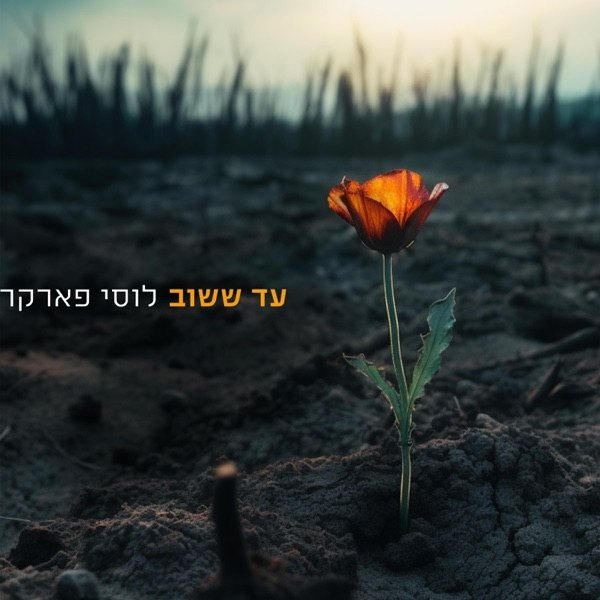
Lucy Parker
עד ששוב
ודאות גבוהההאלבום כולל את איפה הרוח, אין זמן, משיח וילד צמר גפן, ארבעה משמות התיקיות
תיקיות Dropbox
- Lucy Parker - Eifo Haruach
- Lucy Parker - Ein Zman
- Lucy Parker - Mashiach
- Lucy Parker - Yeled Tsemer Gefen
דף תצוגה מקדימה לאישור של רז בלבד. הוא לא מקושר מהאתר ולא נכנס לאינדקס. לכל כרטיס יש רמת ודאות שמסבירה עד כמה בטוח שזו אותה עבודה.
הקישורים מובילים לאפל מיוזיק / אפל פודקאסטס (לא היה לי חיפוש בספוטיפיי). הנתונים המלאים נמצאים ב-results.json.
גבוהה 16 בינונית 8 נמוכה 6 לא נמצא 11

Lucy Parker
האלבום כולל את איפה הרוח, אין זמן, משיח וילד צמר גפן, ארבעה משמות התיקיות
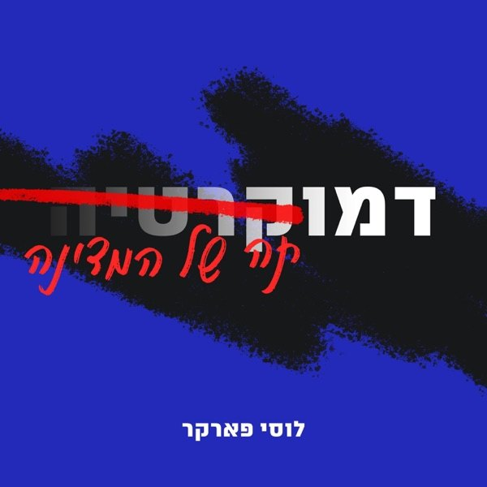
Lucy Parker
התיקייה 'Partsufa Shel Hamdina' והסינגל נקרא 'דמותה של המדינה': אותה אמנית ואותה תקופה, אבל השם שונה מעט
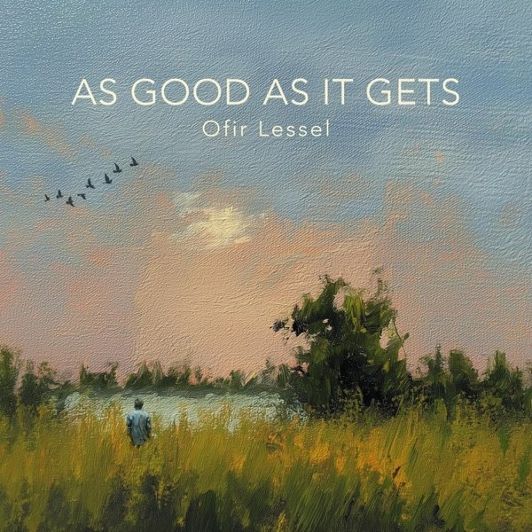
Ofir Lessel
שם הסינגל זהה לשם התיקייה
Ofir Lessel
שם הסינגל זהה לשם התיקייה
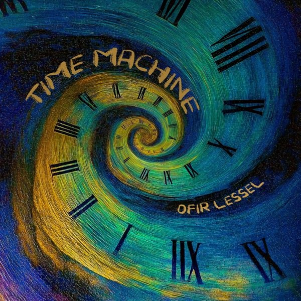
Ofir Lessel
שם הסינגל זהה לשם התיקייה
Ofir Lessel
שם הסינגל זהה לשם התיקייה
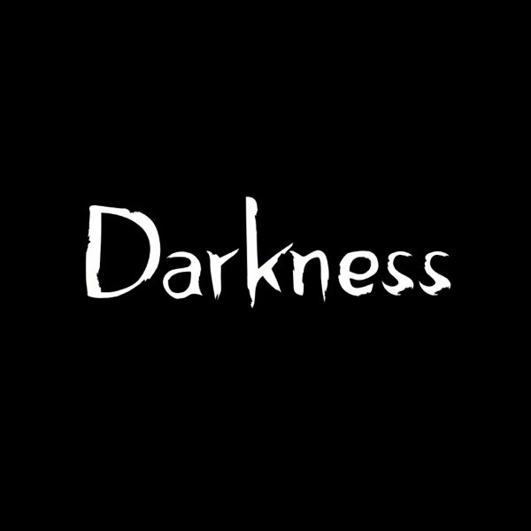
Ofir Lessel
שם הסינגל זהה לשם התיקייה
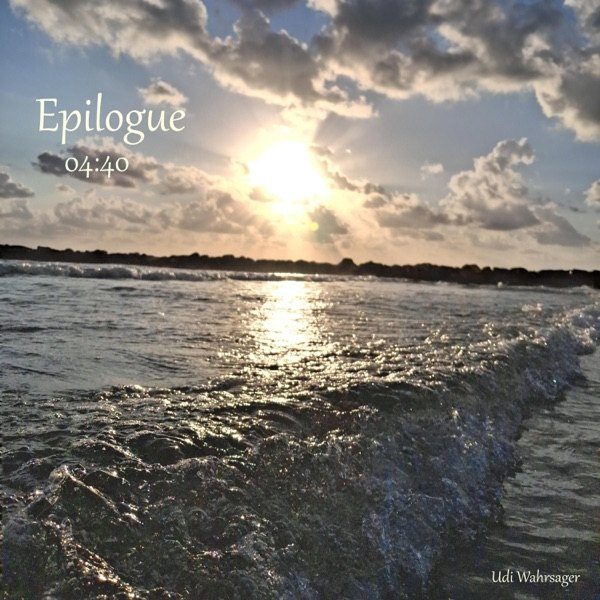
Udi Wahrsager
שם הסינגל זהה (Epilogue)
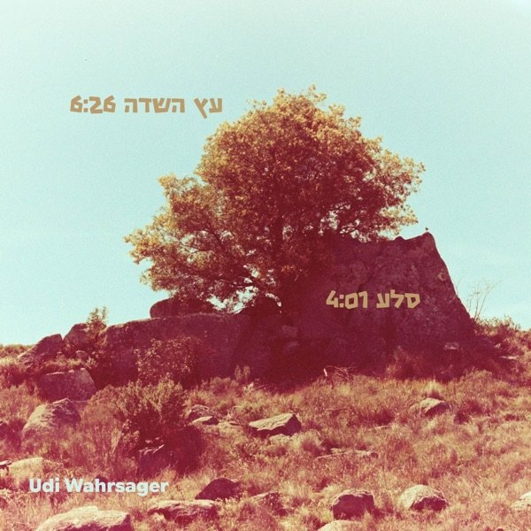
Udi Wahrsager
הסינגל 'סלע' תואם לתיקייה Sela Mix
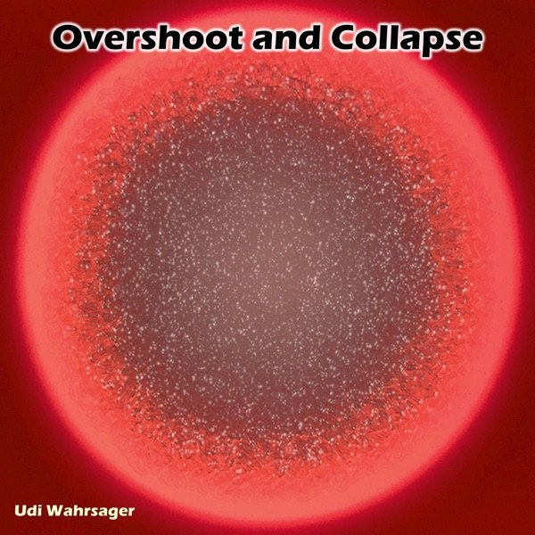
Udi Wahrsager
ה-EP כולל את השיר Acceptance
Udi Wahrsager
סינגל מ-2020 שנמצא בטווח השנים, אבל אין שם תיקייה שמתאים לו (Recording Session כללי)
Ruchama Raz
האלבום (2017) כולל את 'שלג על עירי'. השנה בטווח, אבל רוחמה רז הקליטה את השיר גם ב-1977
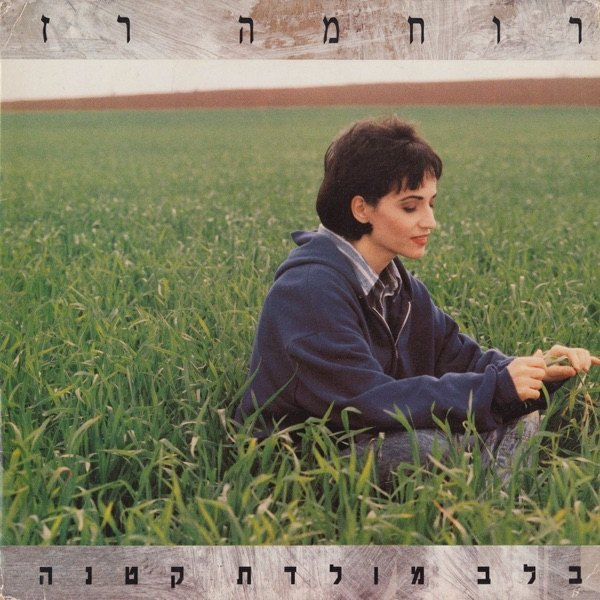
Ruchama Raz
אלבום מ-2016 (שנת התחלת הטווח). אין התאמה לפי שם שיר
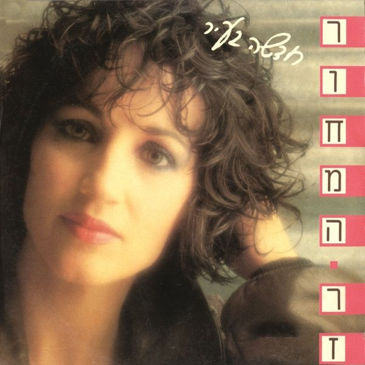
Ruchama Raz
אלבום מ-2016 (שנת התחלת הטווח). אין התאמה לפי שם שיר
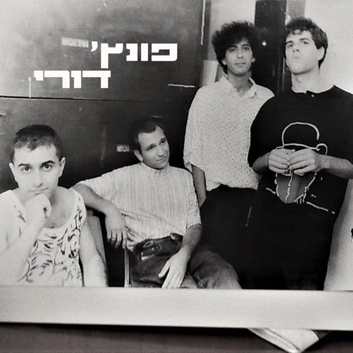
Punch
סינגל 'דורי' של פונץ' ויוסי בבליקי. שם השיר תואם, אבל ההוצאה מ-2022 והתיקייה מ-2024
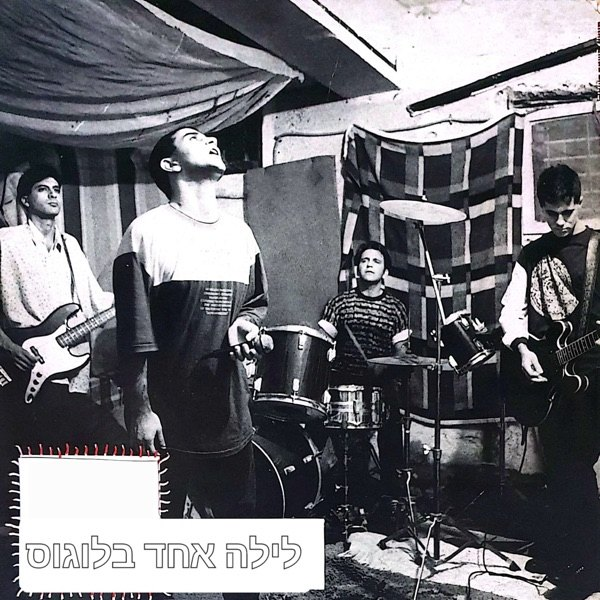
Punch
אלבום הופעה של פונץ' מ-2024 (השנה תואמת), אבל 'דורי' ו'כוכב' לא מופיעים בו
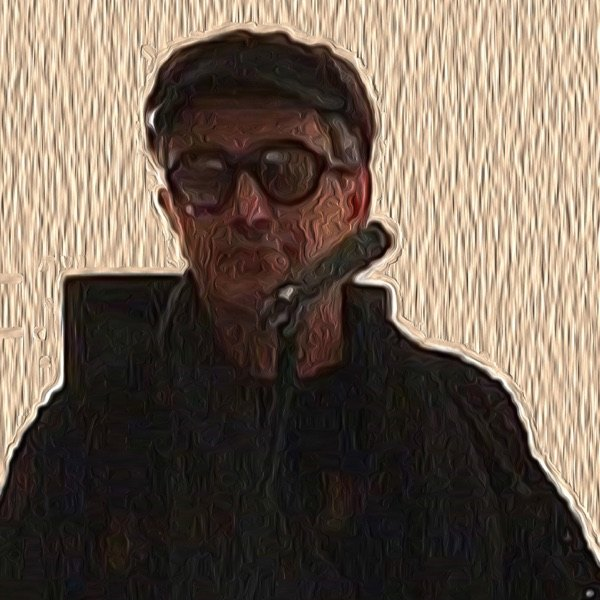
Yossi Babliki
אלבום מ-2019 (השנה תואמת להקלטות). אין התאמה לפי שם שיר
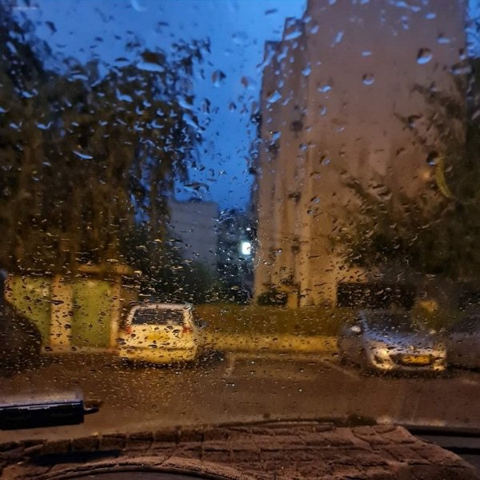
Yossi Babliki
סינגל מ-2021 שנמצא בטווח

Yossi Babliki
סינגל מ-2021 שנמצא בטווח
Frube
אלבום הבכורה של Frube יצא באפריל 2020, אחרי הקלטות האלבום ב-2019. זה האלבום היחיד שלהם
Efrat & Kalin
השיר יצא בשם אפרת גורן. 'עשני נהר' תואם לתיקייה
Efrat & Kalin
'דף חלק' של אפרת גורן
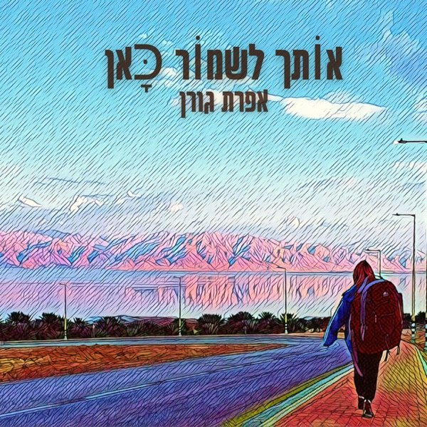
Efrat & Kalin
'אותך לשמור כאן' של אפרת גורן
Efrat & Kalin
'של מיצרי מעלי' של אפרת גורן
Efrat & Kalin
'ער בחלום הזה' של אפרת גורן
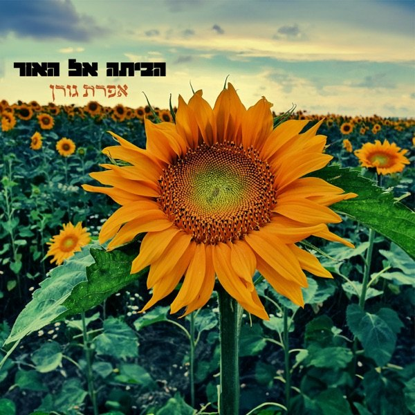
Efrat & Kalin
'הביתה אל האור' מול התיקייה 'Habayta Mix'
Efrat & Kalin
EP של אפרת גורן (2021) שכולל את 'ער בחלום הזה'

Dorit Reuveni & Dudu Zakai – Haadama Sheli
שם הסינגל, האמנים והשנה (2026) תואמים
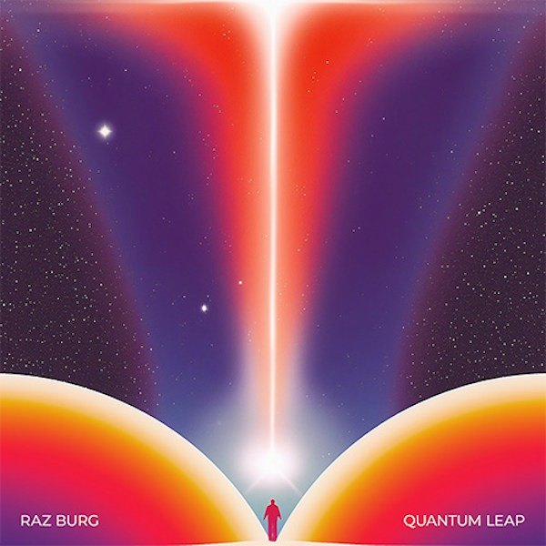
Artlist Album 19
הסקה: זה האלבום ה-19 לפי סדר ההוצאה בעמוד האמן של Raz Burg ב-Artlist (20 אלבומים). אין שם על התיקייה, אז צריך שרז יאשר

Matti Caspi – מתי מספר וסויאן שרה
Recording · Mixing · Mastering
ודאות גבוההשם האלבום זהה (תוספת של רז). לא נמצא באפל מיוזיק, בדיזר או בספוטיפיי, ולכן הקישור הוא לדף המוצר ב-Disc Center (הפצה: NMC, שנה 2015. מקור אחר מציין 2016)
לא נמצאה תמונה
חיפוש באפל מיוזיק (36 תוצאות לאמן) ובדיזר: אין שיר בשם הזה, כנראה עדיין לא יצא
אין שיר בשם Walse/Valse באפל מיוזיק או בדיזר
חיפוש לפי שם השיר בעברית באפל מיוזיק: לא נמצאה הוצאה של רוחמה רז
אין שיר בשם 'כוכב' בהוצאות של פונץ' באפל מיוזיק
חיפשתי את Ilay/Elay Sahar ו'עילאי סהר' באפל מיוזיק, בדיזר ובחיפוש ברשת: לא נמצאו הוצאות
חיפשתי באפל מיוזיק, בדיזר ובחיפוש ברשת: לא נמצאה להקה ישראלית בשם הזה, רק להקות זרות שאינן קשורות
באפל מיוזיק ובדיזר יש עשרות 'Night Shift' זרים, ולא אותרה הוצאה ישראלית מ-2024
Soultone באפל מיוזיק ובדיזר הוא אמן דרום-אפריקאי שאינו קשור. לא אותרה הוצאה ישראלית
חיפשתי באפל מיוזיק, בדיזר ובחיפוש ברשת: לא נמצא
עמוד האמן Raz Burg ב-Artlist (artlist.io/royalty-free-music/artist/raz-burg/1002) מציג 20 אלבומים, ואין ביניהם Back To Track. אולי עוד לא יצא או יצא בשם אחר
האלבום לא מופיע בעמוד האמן ב-Artlist ולא באפל מיוזיק
גבוהה 21 בינונית 12 נמוכה 3 לא נמצא 14
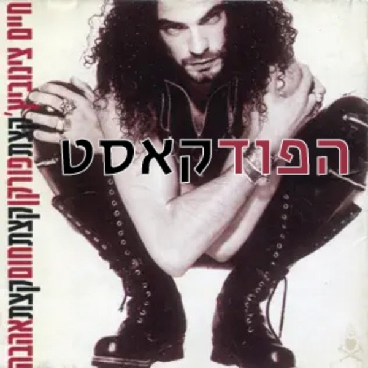
קופרמן (Kuperman) · 2023–2026
פודקאסט שרועי קופרמן מגיש יחד עם אייל גרוספלד (2025, 4 פרקים). אין ודאות שזה אותו קופרמן

חיה רוזנצוויג · 2024–2025
המגישה חיה רוזנצוויג

יניב אופק · 2022–2025
עו"ד יניב אופק, 2023–2025
שעת יצירה · 2023
'שעת יצירה עם גינדי' (Valuebell), 2023
מעשה אדם · 2026
שם זהה, 2026, בוגרי קרן מנדל
חטיבה 7 · 2022–2025
'שבע קטנות על חטיבה 7' (2024) מטעם חיל השריון

חטיבה 7 · 2022–2025
'חטיבה 7 – מלחמת חרבות ברזל' (2025), פודקאסט שני של החטיבה
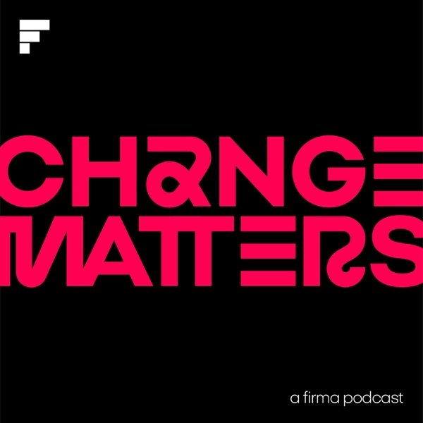
פירמה · 2024–2025
'Change Matters' של Firma (סתיו מילוא ואלעד מישן). השם תואם, אבל לא בטוח שזה אותו פרויקט

איתי בצלאלי · 2023
'קתרזיס' של איתי בצלאלי ו-Valuebell, 2023
קרן מנדל · 2026
כנראה 'מעשה אדם' של בוגרי קרן מנדל (2026). לקרן יש גם את 'קולות מהנגב' (2024)
איתן עזריה · 2023
'הביולוגיה של הווינרים' של איתן עזריה. פודקאסט ותיק, וההקלטות ב-2023 היו כנראה פרקים בודדים

אבי כהן לוטוס · 2023–2024
'סטודיו לקומדיה' של אבי כהן ולוטוס אתרוג

בינה אנושית · 2024–2025
'בינה אנושית – הפודקאסט'
הומניזם דיגיטלי · 2026
תת-הכותרת של 'מעשה אדם' היא 'מנהיגות הומניסטית בעידן דיגיטלי' (2026)
שימו לב · 2024–2025
'שימו לב | פודקאסט מציל חיים' של המערך הקרדיולוגי באיכילוב, 2025
שלי ורוד · 2023–2024
'100 by Dr Ido and Shelly' (שלי ורוד וד"ר עידו סירוטה, 2024). פרק אחד כנראה ב'האופטימייזר' של גיא קצוביץ'
טל בשן · 2023–2024
'סליחה, זה לא מה שהזמנתי' של טל בשן
עולם הירושה – Olam Hayerusha · 2022–2023
שם זהה, עו"ד מנחם פשיטיצקי

רכבת ההשקעות (מרכז הנדל״ן) · 2025–2026
שם זהה, ומרכז הנדל"ן מוזכר בתיאורי הפרקים
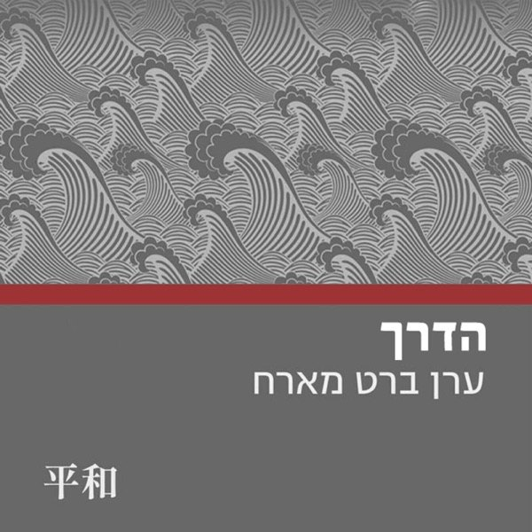
הדרך – ערן ברט · 2024–2026
'הדרך || ערן ברט'
אלקטרה נדל״ן · 2024–2026
'אלקטרה נדל"ן – הפודקסט'

גיל המעבר · 2025–2026
יש כמה פודקאסטים על גיל המעבר. זה של מיכל גרשוביץ הוא הפעיל ב-2025–2026, אבל לא ודאי
לירן בראל · 2023–2024
'ילדים מצליחים במגרש החיים' של לירן בראל, 2023–2024

תוצרת הארץ · 2023–2024
שם זהה, 2023–2024

קריירה זה כל הסיפור – ענת מטלון · 2023–2025
'קריירה זה קול הסיפור'. בפיד מופיעה ענת רונאל מטלון
סיגל כהנא · 2024–2025
'הקול בראש שלך' של סיגל כהנא. יש לה גם את 'כהנא צדקה' (TOX10)

Tomer Reiser · 2023–2026
'ETALKS – מדברים איקומרס' של תומר רייזר
שינוי מבפנים – נורית · 2024–2026
'שינוי מבפנים' של נורית פייט צגלה
אינפומד · 2022–2023
INFOMED (2023). יש גם את 'מדברות טרנדים בבריאות' של Infomed Digital Health

שירן אגמי · 2023–2024
'תזונה מושכלת' של שירן אגמי
יותם גרוס – תעלו לאוטו · 2023–2024
'המדריך לטרמפיסט בתעשיית ההייטק' של יותם גרוס (גם השם 'תעלו לאוטו' רומז לטרמפים)

Ruby Capital · 2026
'The Next Trade' של Ruby Capital מ-2021, בעוד ההקלטה של רז מ-2026
Rinat Nachum · 2023
'ValYou by Rinat Nachum', 2023

Shirley Tamir · 2023
'אוי ואבות – הפודקאסט של שירלי טמיר', 2023
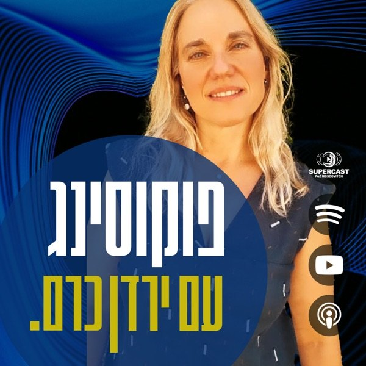
Yarden Kerem · 2024
'התמקדות עם ירדן כרם', 2024
לא נמצאה תמונה
חיפוש באפל פודקאסטס (iTunes Search, country=il) בעברית ובאנגלית + חיפוש ברשת. חיפוש Permit / Permit.io באפל פודקאסטס: אין פודקאסט שמתאים
חיפוש באפל פודקאסטס (iTunes Search, country=il) בעברית ובאנגלית + חיפוש ברשת. לא נמצא באפל פודקאסטס ולא בחיפוש ברשת
חיפוש באפל פודקאסטס (iTunes Search, country=il) בעברית ובאנגלית + חיפוש ברשת. לא נמצא באפל פודקאסטס
חיפוש באפל פודקאסטס (iTunes Search, country=il) בעברית ובאנגלית + חיפוש ברשת. לא נמצא פודקאסט רשמי של רשות החדשנות באפל פודקאסטס
חיפוש באפל פודקאסטס (iTunes Search, country=il) בעברית ובאנגלית + חיפוש ברשת. לא נמצא באפל פודקאסטס ולא בחיפוש ברשת
חיפוש באפל פודקאסטס (iTunes Search, country=il) בעברית ובאנגלית + חיפוש ברשת. לא נמצא באפל פודקאסטס ולא בחיפוש ברשת
חיפוש באפל פודקאסטס (iTunes Search, country=il) בעברית ובאנגלית + חיפוש ברשת. הפודקאסט רשום ב-Rephonic (ישראל), אבל לא נמצא באפל פודקאסטס ולא הצלחתי לשלוף תמונה
חיפוש באפל פודקאסטס (iTunes Search, country=il) בעברית ובאנגלית + חיפוש ברשת. לא נמצא באפל פודקאסטס ולא בחיפוש ברשת
חיפוש באפל פודקאסטס (iTunes Search, country=il) בעברית ובאנגלית + חיפוש ברשת. לא נמצא
חיפוש באפל פודקאסטס (iTunes Search, country=il) בעברית ובאנגלית + חיפוש ברשת. לא נמצא
חיפוש באפל פודקאסטס (iTunes Search, country=il) בעברית ובאנגלית + חיפוש ברשת. לא נמצא
חיפוש באפל פודקאסטס (iTunes Search, country=il) בעברית ובאנגלית + חיפוש ברשת. לא נמצא
חיפוש באפל פודקאסטס (iTunes Search, country=il) בעברית ובאנגלית + חיפוש ברשת. לא נמצא
חיפוש באפל פודקאסטס (iTunes Search, country=il) בעברית ובאנגלית + חיפוש ברשת. לא נמצא